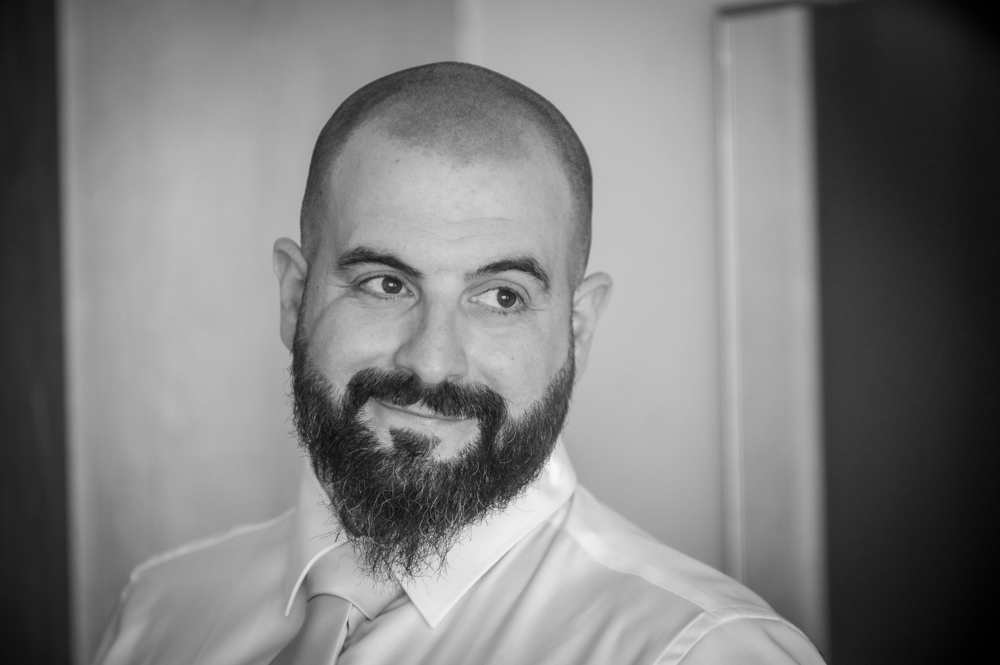

Conscious Technologies
Dirigimos iniciativas de tecnología aplicada — agrotech, adopción digital, transformación, inteligencia artificial — con un mismo principio: que funcionen en operaciones reales, no en diapositivas.
Enfoque
Cada iniciativa de la matriz nace de la misma pregunta: ¿qué problema real, de qué operación real, resuelve esto? Tres principios lo gobiernan todo.
PRINCIPIO 01
Construimos contra las necesidades de quien produce, vende y vive de su trabajo — no contra listas de requisitos teóricas. Si no funciona en el terreno, no funciona.
PRINCIPIO 02
Las decisiones se apoyan en datos medibles, no en la tecnología de temporada. Adoptamos lo que aporta y descartamos lo que solo brilla.
PRINCIPIO 03
No entregamos un informe y nos vamos: cada iniciativa se diseña, se despliega y se opera. La prueba de la tecnología es su día a día, no su demo.
Iniciativas
La matriz dirige cada iniciativa con identidad y foco propios. Hoy hay una vertical activa y nuevas líneas en exploración.
El sistema operativo de la huerta: analiza el terreno, diseña la explotación, opera el riego y el clima día a día, y avisa cuando la tierra necesita una decisión humana. En desarrollo, con despliegue piloto en una explotación real de Cantabria.
Visitar conscious-harvest.com →Llevar a la pyme la dirección tecnológica que las grandes dan por sentada: datos, procesos y herramientas que el negocio realmente usa.
IA puesta a trabajar en operaciones concretas — visión, predicción, automatización — donde el retorno se mide, no se promete.
Quién está detrás

Fundador · Datos y transformación digital
Más de una década llevando la tecnología a donde el trabajo es real: empezó dirigiendo operaciones de restaurante y terminó dirigiendo los datos y la transformación digital de la matriz de una multinacional de restauración, recorriendo cada peldaño entre ambos puntos.
Esa doble vida — operaciones y datos — es la tesis de Conscious Technologies: la tecnología solo transforma cuando la dirige alguien que entiende el negocio que hay debajo.
LinkedIn →Contacto
Si tienes una operación real con un problema real — o quieres saber más de cualquiera de las iniciativas — escríbenos.
hola@conscious-technologies.comRESPONDEMOS EN MENOS DE 48 H · CASTELLANO / ENGLISH